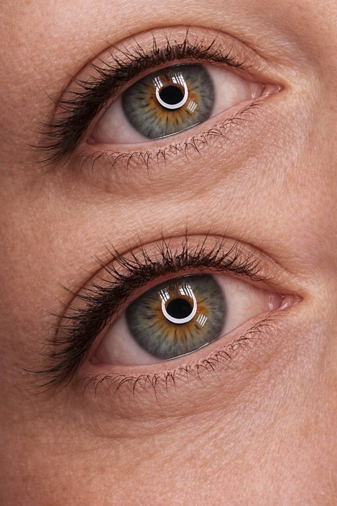
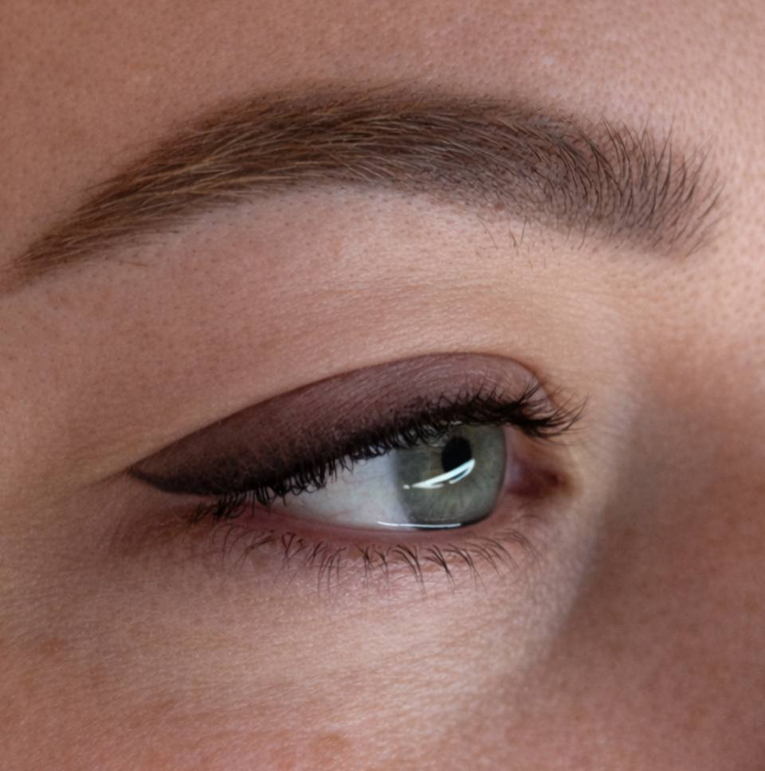
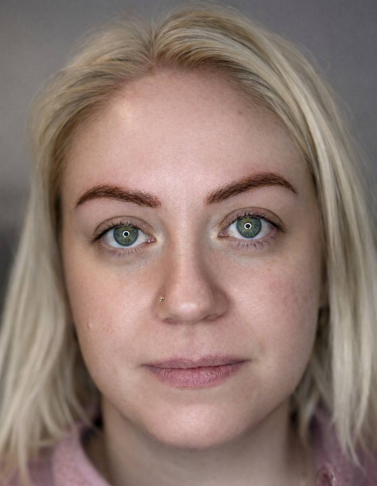
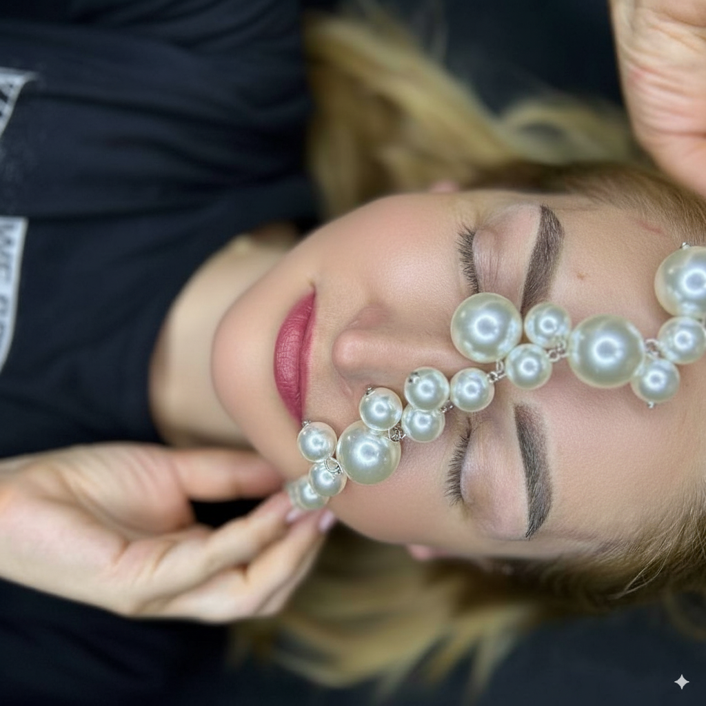

Paznokcie i makijaż permanentny, w Twoim tempie.
Ty wybierasz, mistrzyni dba o perfekcyjne wykonanie i komfort. Indywidualna konsultacja, sterylne narzędzia, jednorazowe igły, delikatne techniki, szybka regeneracja.

Subtelny efekt albo wyrazisty look
Subtelny, naturalny efekt albo wyrazisty look — ty wybierasz, my dbamy o perfekcyjne wykonanie i komfort. Indywidualna konsultacja, sterylne narzędzia, jednorazowe igły, delikatne techniki i szybka regeneracja.







Wybierz manicure
Jeśli szukasz czegoś oryginalnego, postaw na wysokiej jakości materiały i trwałość. I po prostu ciesz się swoją indywidualnością.
.png)


Witajcie! Nazywam się Iryna.
Jestem mistrzynią makijażu permanentnego.
Moim celem jest podkreślanie naturalnego piękna każdej kobiety poprzez perfekcyjnie wykonane brwi, usta i rzęsy. Dzięki wykształceniu artystycznemu doskonale wyczuwam proporcje, kolor oraz harmonię twarzy, dlatego każda moja praca jest indywidualnie dopasowana i wygląda maksymalnie naturalnie.
Pracuję wyłącznie na wysokiej jakości materiałach oraz nowoczesnych technikach makijażu permanentnego, zwracając uwagę na każdy, nawet najmniejszy detal. Najważniejsze jest dla mnie nie tylko wykonanie zabiegu, ale stworzenie efektu, w którym będziesz czuć się pięknie i komfortowo każdego dnia. Zawsze słucham oczekiwań klientki i dobieram kształt oraz odcień tak, aby subtelnie podkreślić naturalne rysy twarzy.
Posiadam certyfikaty oraz doświadczenie w technikach takich jak: technika włoskowa, pudrowe ombre, gradient/shading, makijaż permanentny przy alopecji, usta akwarelowe, nude lips, kreska w linii rzęs, soft liner, smoky brows, techniki kombinowane oraz natural effect PMU.
Co mówią klientki
Największą motywacją w mojej pracy są moi klienci. Kocham to, co robię, ponieważ mogę sprawiać, że czujecie się piękniej i pewniej każdego dnia.
Irina ma niezwykły talent i ogromne wyczucie estetyki. Dziękuję!— Katarzyna
Pełen profesjonalizm, a przy tym ciepła i serdeczna atmosfera.— Victoria
Zawsze wracam, bo wiem, że efekt będzie idealny.— Renata